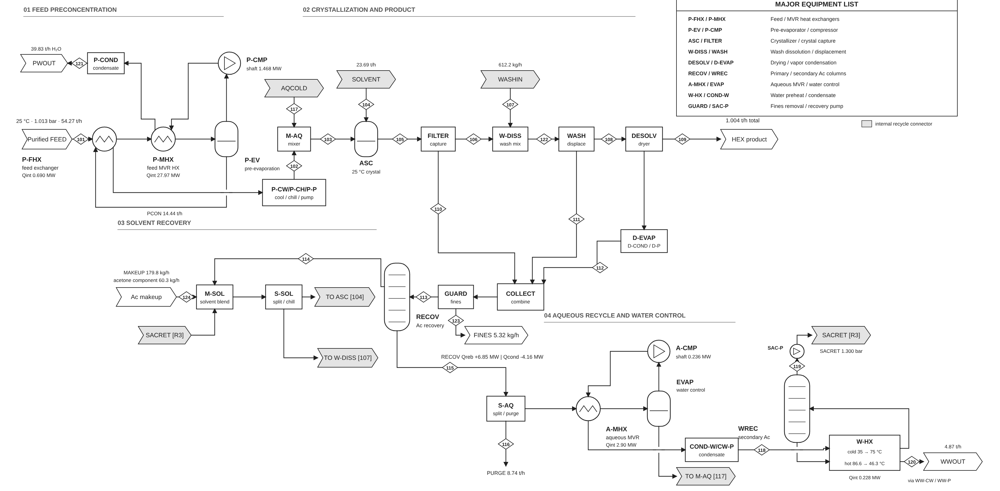
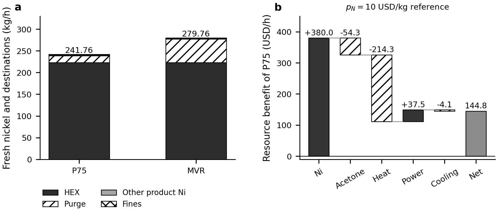
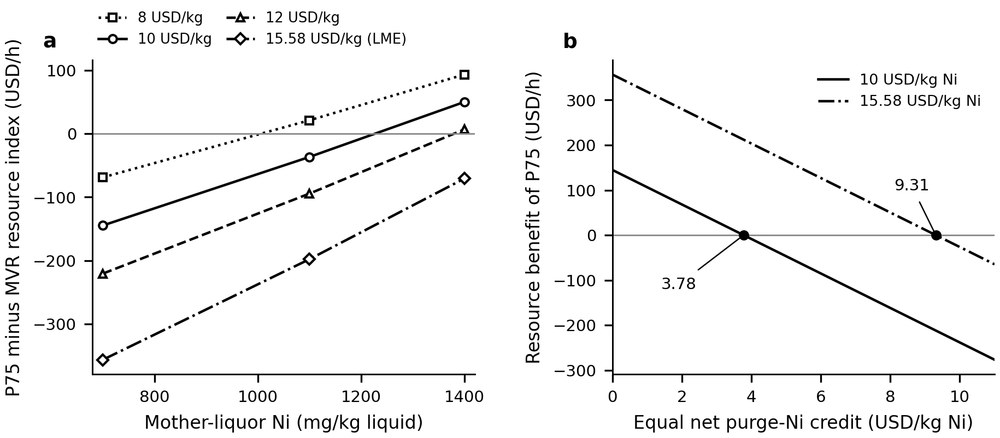

Nickel sulfate plant
8000 t/y nickel sulfate hexahydrate. Antisolvent crystallisation, washing, solvent recovery, MVR and heat integration.



Result scope
The P75 analysis and the downloadable R95–W700 native capture are distinct archived cases. Prescribed endpoints are not a validated predictive SLE model. Resource margins exclude a complete installed-cost and profitability assessment.